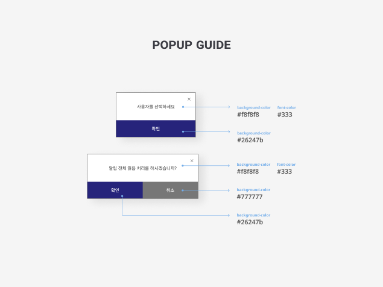
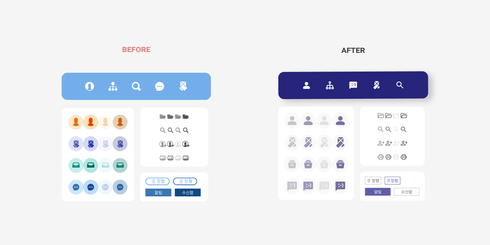
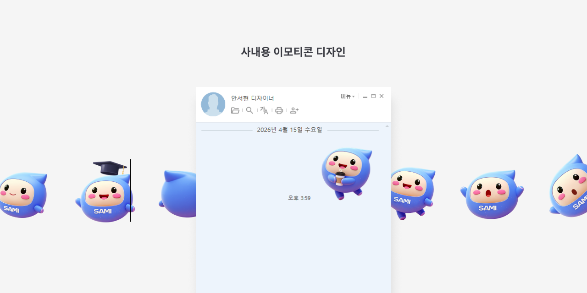

Feature Story
메신저 UI 브랜드 컬러 정합성 개선
새로운 메신저 시스템 도입에 맞춰 회사 컬러를 체계적으로 적용하고, 아이콘톤을 정합하여 일관된 브랜드 경험을 구축했으며 가이드를 제공.

리뉴얼 전후 전체 화면 비교
Context
사내 메신저 리뉴얼 프로젝트로, 기존 디자인에 현 회사 컬러를 반영하는 것이 목표였다. 담당 역할은 리뉴얼 디자인과 아이콘 제안, 적용 가이드 제작 및 전달이었다.
Problem
회사의 브랜드 컬러와 아이콘 톤이 완전히 일치하지 않았고, 단순 배경색 교체만으로는 전체 일관성 확보가 어려웠다. 필요 이미지 수급과 적용 기준 부재로 인한 구현 혼선 가능성도 있었다.


My Judgment
시스템 전반에서 아이콘 스타일의 일관성이 부족하다고 판단하여, 모든 시스템 요소에 적용되는 아이콘을 재정의하고 전반적인 교체 작업을 진행하였다.
Strategy
- 브랜드 컬러 팔레트를 UI 토큰으로 매핑
- 아이콘 톤, 두께, 크기 규칙 정의 및 제안
- 필요한 이미지 목록화 및 수급
- 즉시 적용 가능한 시각 가이드 제작 및 전달

아이콘 스타일 재정립
아이콘 세트 톤·컬러 재정의 전후
Execution
- 리뉴얼 시안 제작 및 검토
- 아이콘 세트 톤·컬러 재정의 및 제안
- 필요한 이미지 요청 및 수급 완료
- 적용 가이드 문서화 및 전달, 에셋 정리
- 가이드에 따라 메신저 UI에 컬러·아이콘 일관 적용

최종 적용 가이드 및 에셋 패키지
Result
회사 컬러와 아이콘 톤이 일관되게 적용된 메신저 UI를 완성했고, 명확한 가이드와 에셋을 확보하여 사내 사용 가능한 상태로 리뉴얼이 마무리되었다.
Insight
단순 색상 치환만으로는 브랜드 정합성을 확보하기 어렵다. 아이콘과 세부 요소까지 규칙화하고 가이드를 제공하는 것이 중요하다.
소스 원본의 형태와 룰을 유지하면서 교체 작업을 진행하여, 이미지만 바꾸면 즉시 적용할 수 있는 구조를 만들었다.